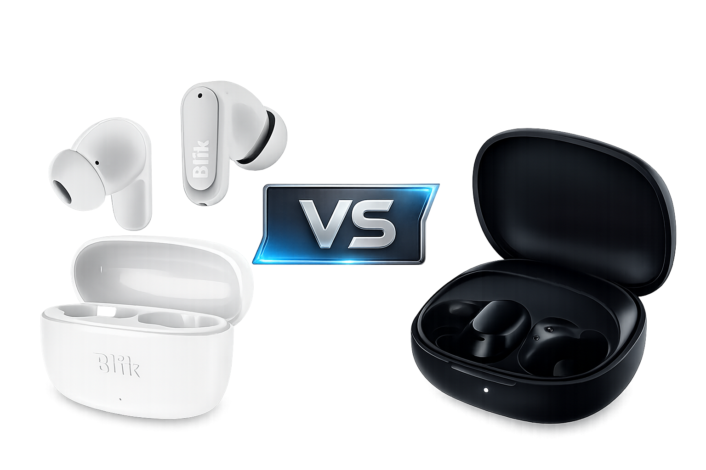

Economicos, in-earXiaomi Redmi Buds 6 Play vs Blik Air500: ¿Cuál es mejor por $13.000?
Buscando audífonos inalámbricos en Chile es fácil tentarse con opciones caras, pero ¿qué pasa cuando el presupuesto es sagrado y no queremos gastar más de quince mil pesos? Hoy ponemos frente a frente a dos gigantes del ahorro
Leer análisis completo →